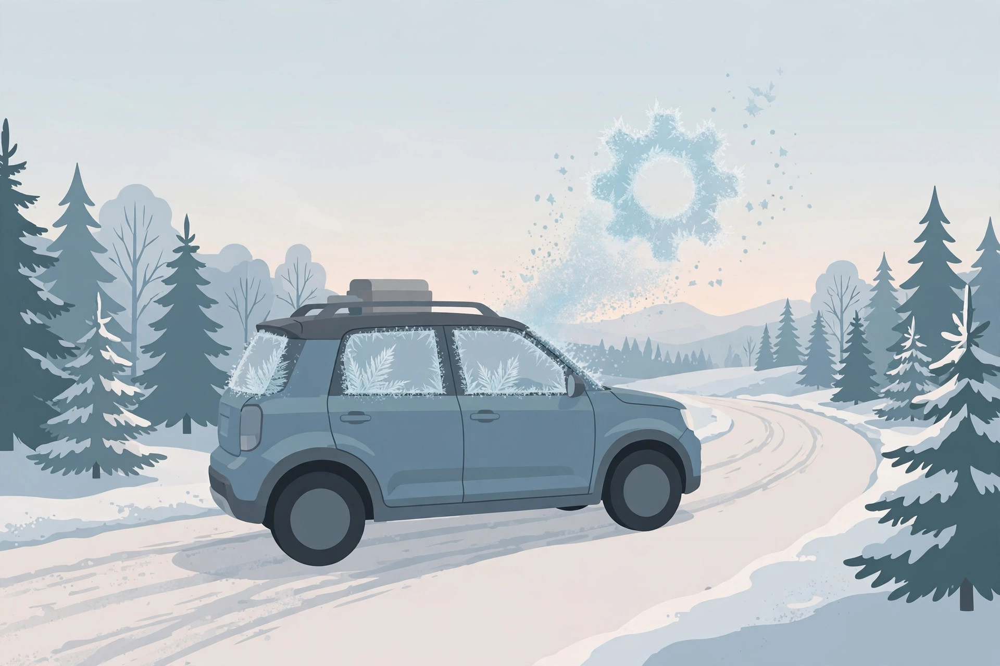

Cold weather shifting in a 2012 RAV4: normal delays vs real problems

Safety note. This guide is observation only: driving, noting, and checking. No repair procedure is described. A transmission that slips badly, flares, or shows a warning light belongs in front of a technician, not in a test routine.
Is the firm, late first shift on a freezing morning a fault, or is it the transmission doing what cold fluid makes it do? The sourced answer is a test, not a guess: normal cold behaviour smooths out within a mile or two as the fluid warms. Behaviour that survives warm up is a different category entirely. This article gives you the morning routine that separates the two, built from the published normal and abnormal lists, plus the one honesty note the topic needs: no RAV4 specific cold shift calibration table was found in the research, so the line here is drawn from behaviour over warm up, which is the test any owner can actually run.
The first kilometre: what cold fluid does to shift feel
Transmission fluid thickens as it cools, and a cold transmission answers more slowly and more firmly than a warm one. The published normal list for cold automatics is specific: firm or slightly delayed shifts on the first drive of the day, which then smooth out within a mile or two as the fluid warms. Read that as a pattern with three parts, not a single symptom. Cold only, early only, and improving as you drive. A shift that meets all three parts belongs, provisionally, to the weather. A shift missing any part of the pattern needs the rest of this article.
Designed warm up behaviour: delayed shifts and late lockup
Some of the cold behaviour is not just physics, it is programming. Manufacturer owner's manual material in the research, from a GM manual and included here as evidence about automatic transmissions generally, not as a Toyota specification, documents a warm up shift schedule as a designed feature at ambient temperatures of 32 degrees Fahrenheit, which is 0 degrees Celsius, or below. Under that schedule, shifts are deliberately delayed, and torque converter clutch lockup is withheld until the transmission fluid and engine coolant are warm, about 1 to 3 miles of driving. Two cautions keep that fact honest. It is another maker's documentation, so it proves that delayed cold shifts can be calibration rather than failure, not that your RAV4 uses identical thresholds. And it explains delay and late lockup only. It does not explain flare, slipping, or a warning light, at any temperature.
The morning test: route, distance, and what to note
- Pick a repeatable route. Use the same first drive on at least two cold mornings: a route with two or three ordinary stops and a stretch long enough to cover about 3 miles, so it spans both sourced distance markers, smoothing within a mile or two, and lockup withheld for roughly 1 to 3 miles.
- Note the cold behaviour in the first half mile. Engagement delay going into drive, firmness of the first shifts, and whether the engine holds gears longer than usual. Write down which of these appear; memory edits this list by the second morning.
- Mark the distance where it changes. Note the odometer point where shifts feel normal. Inside a mile or two is the sourced normal pattern. Note it even if everything feels fine, because that number is your baseline for the rest of the winter.
- Check again fully warm. After the drive, on the return leg or later the same day, run through the same shifts warm. This is the decisive comparison: normal cold behaviour is gone when warm, by definition.
- Repeat once before concluding anything. One cold morning is weather and mood. Two mornings with the same pattern, improving at the same distance, is a finding you can describe accurately to a shop if you ever need to.
What success looks like: shifts that start firm or delayed when stone cold, smooth out within about a mile or two, stay normal for the rest of the day, and repeat that pattern the next cold morning. That is the weather talking, documented in your own notes.
Red flags that are not weather: flare, slip, shudder, lights
The abnormal list in the research is equally specific, and none of it has a temperature excuse:
- Harsh shifting that persists when the transmission is fully warm.
- Shift flare, where engine revs rise during a shift before the next gear takes hold.
- Slipping, where revs rise without the matching increase in road speed.
- A warning light on the dash, at any point, cold or warm.
- Behaviour that gets worse across the morning instead of better.
Any one of these moves the vehicle out of the test routine and into a diagnosis booking, regardless of what the thermometer says. Cold weather can reveal a marginal transmission by making it work harder, but revelation is not causation, and a warm failure described to a shop as a cold quirk will be diagnosed late. The symptoms guide works through these faults in full.
Fluid condition: the check that separates weather from wear
One check connects the two categories. Worn, dark, or low fluid makes cold behaviour worse and warm behaviour worse, and it does not improve as the season turns. If your morning test shows the normal pattern, the fluid check in the level and condition guide is still the right confirmation that the level and colour support the weather explanation. If the test shows any red flag, the same check gives the shop a starting fact instead of a story. Either way, judge this transmission the way the sources do: not by how it feels at the end of the driveway, but by whether warm driving erases what cold driving showed you.
— Owen Park, Automotive Writer